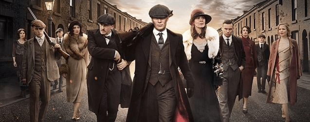

Cillian Murphy
“Thomas Shelby”

Peaky Blinders
L'épopée d'une famille de gangsters dans les rues anarchiques de Birmingham au lendemain de la Première Guerre mondiale.
Dans le Birmingham industriel de l’après Grande Guerre, les anciens soldats, mais aussi les révolutionnaires et les criminels luttent pour subsister. Alors qu’une féroce révolte ouvrière est sur le point d’éclater, le Parlement anglais dépêche ses forces spéciales pour maintenir l’ordre. De leur côté, les Peaky Blinders, une organisation criminelle particulièrement redoutée dans la ville, ont pris possession par erreur d’une cargaison d’armes à feu volées. Mais l’arrivée de Chester Campbell, un policier de Belfast aux méthodes expéditives, dont la mission est de purger la ville de ses gangs sanguinaires, pourrait bien compromettre les ambitions de leur impitoyable chef, Tommy Shelby.
Information
Genre : Fiction historique, Drame, Crime, Thriller
Année de sortie : 2013 (première saison)
Nombre de saisons : 6
Format de lecture : HD
Info. sur réalisateur : Steven Knight, Anglais
Âge minimum requis: 16+
Prix gagnés : ici
Critiques :
- Presse 4/5 (7 critiques)
- Spectateurs 4,5/5 (23 705 notes)
Casting
Paul Anderson
“Arthur Shelby Jr.”
Sam Neil
“Chester Campbell”
Les Inrockuptibles
Par Olivier Joyard,
Ceux qui soupirent déjà devant l’idée de subir une énième série d’époque naphtalinée peuvent ranger les flingues. Peaky Blinders a beau déployer ses ailes en 1919, rien ou presque ne la rattache à la tradition des drames compassés dont la télé anglaise s’est faite une spécialité.
Source : ici
Critictoo
Par Fabien,
Un drame historique de qualité à la beauté plastique égale à la maîtrise de l’écriture et qui est porté par un casting de haut vol.
Source : ici
Télé Loisirs
Par Claire Lavarenne,
Dès les premières images, le travail léché sur l’éclairage et la reconstitution solide et précise d’une époque sautent aux yeux. C’est aussi une autre façon de montrer la ville, à travers ses recoins sombres et ses lieux insolites. Peaky Blinders offre à la fois une fresque historique – le récit étant basé sur des faits réels – sociale et familiale.
Source : ici